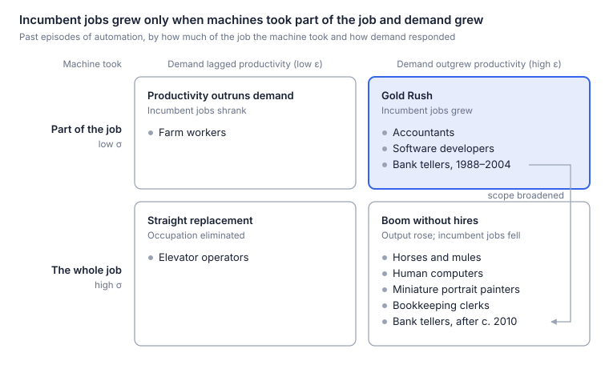

The prediction, and a six-word reply
The popular story about AI and work runs in three steps. Machines learn to do human tasks. So we are needed less. So jobs disappear.
I have argued that this story is close to backwards, for two reasons. First, AI is a new resource, like a gold rush, and the uses for it are exploding. Every discovery AI mines needs people to refine, apply and sell it, and every new use makes more businesses viable. More resource and more uses mean more work, and so more people.
Second, change is speeding up, and a faster-changing world needs more workers, not fewer. Every change has to be absorbed by someone: products redesigned, systems rebuilt, people retrained.
My guess is that the next decade will look more like a Gold Rush than a jobs apocalypse (see also Horses or Birds?).
When I emailed this argument to Geoffrey Hinton, he replied in six words:
The new hires will be AI.
His point is that a Gold Rush can happen without more human labor. Gold rushes needed human miners because nothing else could dig. This time the newly abundant resource is also a newly abundant worker, so a boom in output can be met with more agents (and eventually robots) instead of more people.
Hinton, a Nobel laureate and a founder of deep learning, is a leading voice among those I call the AI pessimists: people who expect AI to shrink the demand for human work, whatever they think of its benefits or safety. His six words are the sharpest statement of their case I have seen, and they changed how I think about mine. So this follow-up is written as a debate between the Gold Rush and the AI pessimists.
The one inequality that decides it
As machine intelligence gets cheaper, it pulls on jobs in two directions. The work it touches, from legal advice to software, gets cheaper, so people buy more of it, and producing more takes more people. But AI also does more of that work itself, so each unit of output takes fewer people. Which pull wins?
Economists have asked this question since David Ricardo added a chapter on machinery to his Principles in 1821, and John Hicks worked out the answer in 1932. It comes down to two numbers:
- ε (epsilon), the price elasticity of demand: how much more people buy when the work gets cheaper. It sets how much output grows.
- σ (sigma), the elasticity of substitution: how readily firms replace people with AI as AI gets cheaper. It sets how much less labor each unit of output needs.
Employment is output times the labor needed per unit of output, so the two forces pull against each other, and the larger number wins:
- ε > σ: Demand grows faster than AI displaces labor. Employment rises.
- σ > ε: AI displaces labor faster than demand grows. Employment falls.
Why elastic demand is not enough. The familiar case for optimism is a special case. If AI is only a copilot that makes each worker more productive, the bar ε must clear is 1: employment rises whenever demand is elastic (ε > 1), as it did for programmers over the past half-century. The pessimist case describes something else: AI as an agent that firms can use in place of a person. Then the bar is σ. Demand must grow faster than AI displaces labor (ε > σ). If AI is a close substitute for people, σ is high, and even very elastic demand can fall short.
Why the effects start small. When AI works as an agent, a third number sets the size of the effect: AI's share of production costs, \(s_{AI}\). For each 1 percent fall in AI's effective price (its price per unit of work done), the percentage change in employment is roughly:
While AI is a small share of costs, a modest fall in its price moves employment only a little, whichever way the inequality points. Appendix A sketches the math; my companion academic paper has the full derivations.
Two routes to a Gold Rush. The inequality covers one route to more human work: in today's jobs, demand must outrun substitution. The second route runs through new work: even if substitution wins in today's jobs, the economy may create new tasks for people faster than AI takes over old ones. Agentic AI challenges both routes, because it can meet the new demand and potentially do the new work too.
The first four rounds test the first route; the fifth tests the second. In each round I make the Gold Rush case, then the strongest case I can build for the AI pessimists, and then score the round.
- Round 1 (ε): Will demand for cognitive work expand as it gets cheaper?
- Round 2 (σ in history): Have machines complemented people or replaced them?
- Round 3 (the early data): What has happened so far?
- Round 4 (σ ahead): How much will AI substitute for people, and how fast?
- Round 5 (new work): If substitution wins, will new work make up the difference?
Round 1: Will demand for cognitive work expand?
The first number is ε: how much more cognitive work people will buy as it gets cheaper.
The Gold Rush case. Expert cognitive work is rationed by price, so demand for it should be highly elastic. Most of the potential demand for expert hours never shows up in the data, because so few can pay for them. Low-income Americans get no legal help, or not enough, for 92 percent of their serious civil legal problems. Millions of other useful things go undone for the same reason: custom software for small businesses, hypotheses nobody has time to test, one-on-one tutoring only wealthy families can afford, contracts nobody reads closely. When intelligence gets cheap enough, we do not just do the same work with fewer people. We aim intelligence at problems that could never have paid for an expert.
We have seen this before, in the very field now most exposed to AI. Programming has become many times more productive since the first compilers, yet US employment in information technology rose tenfold, from 450,000 in 1970 to 4.6 million in 2014. Each fall in the cost of writing software pulled in far more demand for it, as software spread from a few mainframes into nearly every product (Appendix B).
The same could happen in the services whose costs have risen fastest. Health care, education and legal help are labor-intensive, so their prices have climbed for decades relative to manufactured goods, a pattern economists call Baumol's cost disease. Cheap intelligence could finally reverse it.
The case for the AI pessimists. Demand cools as markets mature. The economist James Bessen shows that US textiles, steel and cars followed the same arc: employment grew for decades alongside fast productivity growth, then fell. Demand was elastic while people had little of the product and turned inelastic as they neared having enough. Software in 1970 was at the start of that arc; many cognitive services today may be much further along.
Moreover, unmet need is not the same as price-elastic demand. The legal gap counts problems, not what people or governments would pay to solve them. In health care, the famous RAND experiment found that when patients paid more out of pocket, they cut their medical spending only slightly. Where demand is held back by regulation, budgets or habit rather than price, cheaper AI will not set off a buying boom on its own.
Score: Gold Rush, on points. Demand for cognitive work is far from fixed. Software shows it can explode when the work gets cheaper, and law, health and education hold huge pools of unmet need. Still, need is not demand, and history says demand cools as markets mature. Above all, exploding demand guarantees more output, not more workers, because machines can meet it too. Whether more output means more workers depends on σ, the subject of the next three rounds.
Round 2: Does AI complement or substitute? What history says
Now σ, starting with history: have machines worked alongside people or replaced them?
The Gold Rush case. In the best-known cases, a machine took over a routine task and left people the rest of the job, and the rest of the job grew. The closest precedent to AI is the electronic spreadsheet, because it automated thinking rather than muscle. In the decades after VisiCalc, the first spreadsheet program for personal computers, the US lost about 400,000 bookkeeping and accounting clerk jobs and gained about 600,000 accountant jobs, as Planet Money reported. Once calculation was cheap, clients started asking accountants far more questions.
Bank tellers in the ATM era tell the same story. ATMs cut the tellers needed per urban branch from about 20 to 13. That made branches cheaper to run, so banks opened many more of them: 43 percent more in cities. The extra branches offset most of the cut. National teller employment rose modestly, from about 500,000 in 1980 to about 550,000 in 2010. The job shifted from counting cash to selling and advising.
Outright elimination is rare, too. Of about 270 occupations in the 1950 census, James Bessen finds only one, elevator operator, that automation had wiped out by 2010.
The case for the AI pessimists. Tell those stories to the end and several of them turn: once a machine could do the whole job, the job went.
The ATM story runs from roughly 1988 to 2004. Then mobile banking arrived, branches began to close, and teller employment has fallen substantially since around 2010. The Bureau of Labor Statistics projects a further 13 percent decline from 2025 to 2035. A narrow tool complemented tellers; a broader one replaced them.
Before electronic computers, "computer" was a job: people who did calculations by hand, such as artillery tables. When computation became nearly free, the job vanished. Programming and data analysis emerged as new work, but the human computers were gone. The same technology produced a Gold Rush and a wipeout at once.
Then there are horses. The US horse and mule population grew sixfold between 1840 and 1900, to more than 21 million; by 1960 it was about three million. Demand for transport did not shrink; it exploded. Horses lost anyway, because engines could do everything a horse did. The economist Wassily Leontief used exactly this analogy to warn about human labor.
Two more cases complete the picture. Tractors made farm workers far more productive, but people eat only so much, so agriculture fell from about 41 percent of US employment in 1900 to 2 percent by 2000. Automatic elevators replaced their operators outright, and cheaper rides created no new riders.
Put the cases on two axes, demand (ε) and how much of the job the machine took (σ), and they sort into four boxes (Appendix B looks more closely at software and photography):

The boxes describe occupations at a moment, not forever. Tellers started in the Gold Rush box, where jobs grew. When the technology broadened from ATMs to phones, they slid into "boom without hires," where output rose but jobs fell. That slide is the real risk with general-purpose AI: a tool that improves every year can push a job down the chart after spending years helping it.
Score: draw. Read together, the cases teach one lesson: automating part of a job in a growing market has usually grown employment; automating the whole job has destroyed it, whatever happened to demand. Wiping out an entire occupation has been rare. But AI may be the first technology general enough to push most cognitive occupations toward the bottom row at once.
Round 3: What do the data show so far?
Nearly four years after ChatGPT, what does the evidence say? (Appendix C lists the studies behind this round.)
The Gold Rush case. Studies looking for an economy-wide AI effect keep finding none they can detect. The Yale Budget Lab finds effects on employment and wages statistically indistinguishable from zero. In Denmark, Humlum and Vestergaard rule out effects on earnings or hours larger than 2 percent and find no change in hiring at workplaces that adopted chatbots.
Firms tell the same story: more than 90 percent of executives in four countries say AI has not changed their employment over the past three years. The heaviest AI spenders are growing: in Ramp's data, they added about 10 percent to headcount, and 12 percent to entry-level headcount, relative to later adopters. And software, the profession AI was supposed to hit first, is hiring again. US software postings on Indeed have risen almost 15 percent since February 2025, while postings overall fell about 7 percent, even as AI agents write ever more code. They remain about 27.5 percent below their February 2020 level, though.
The case for the AI pessimists. Quiet economy-wide numbers settle little, because AI's share of costs (\(s_{AI}\)) is still small. Only 17 to 20 percent of US businesses told the Census Bureau they had used AI in the previous two weeks. By mid-2026, generative AI was saving about 2 percent of all US work hours. Even at a 5 percent cost share, most combinations of ε and σ in the companion paper imply employment changes of 6 percent or less in either direction, spread over years. That supports neither a sudden collapse nor a lasting boom. It mainly shows that integrating AI and checking its work takes time and money.
And booming adopters are weaker evidence than they look, because a firm can grow by taking business from rivals. French firms that adopted robots expanded while employment in their industries fell.
The real signal is in hiring. Labor-saving technology often works by hiring fewer people rather than firing incumbents. German robots, for example, did not raise incumbents' risk of losing their jobs; manufacturing shrank because fewer young people were hired. Such a cut shows up first in hiring data, and unemployment by occupation can miss it, since someone never hired into an exposed job is not counted as unemployed in it.
And in hiring, the US data do show a decline. In payroll data, employment of 22- to 25-year-olds in the most exposed jobs stood 19 percent below where it would be had it kept pace with less-exposed peers, as of June 2026. A year earlier, the gap was 15 percent. The 19 percent gap roughly halves, though, once you allow for differences in education across occupations. Census records covering nearly all private employers show a similar early-career drop in the most exposed industries. In résumé data, junior employment at AI-adopting firms fell 8 to 10 percent within two years, mostly through slower hiring, while senior employment kept rising. Even the software rebound is mostly senior: senior roles account for 71 percent of the rise, and entry-level roles made up just 4.5 percent of software postings in early 2026, the lowest share of any sector.
Where hiring is quick and contracts are short, substitution shows up fast. After ChatGPT's release, freelancers in exposed occupations on a large online platform lost about 2 percent of their monthly jobs and 5 percent of their monthly earnings. On another platform, posts for writing and coding gigs fell 21 percent relative to manual work within eight months. Gig markets are where substitution should be easiest, so treat these as upper bounds. But firms building AI into their own systems point the same way. About three-quarters of business traffic through Anthropic's API, the channel software uses to reach its models, is automation rather than assistance: the model is handed whole tasks.
Is it AI? That is the weak link. Junior hiring in exposed jobs began slipping before ChatGPT, as interest rates rose. One estimate that rules out interest rates as the cause proved sensitive to later data revisions. Remote work explains much of the decline in some datasets but not in others. And the US pattern mostly fails to appear in Denmark, Finland and Norway, though a gap for young Norwegians opens from spring 2025.
The junior puzzle. Field experiments say juniors should be the biggest winners. Customer-support agents given an AI assistant became about 15 percent more productive (30 percent for the least experienced). Writers using ChatGPT finished 40 percent faster, narrowing the gap between weaker and stronger workers. Why, then, is junior hiring falling? Because the experiments test AI as a copilot for people already on the payroll, while hiring responds to AI as an agent. AI helps novices most by supplying what they lack: the codified know-how of experienced colleagues. A system that can hand that know-how to a novice can often apply it without one.
Score: draw. Overall employment, hours and wages show no detectable effect, which is what both sides should expect while AI is a tiny share of costs. Beneath that quiet surface, the split in hiring fits both sides at once: for seniors, AI looks like a copilot; for juniors, like an agent. Junior work is the most codified and easiest to hand off. One experienced worker with agents can do both the junior's job and their own. So σ looks high for junior work and low for senior work. Still, because the junior decline began as interest rates rose, AI's role in it remains an open question.
Round 4: How much will AI substitute, and how fast?
Where is σ heading? How far and how fast AI pushes occupations toward full substitution depends on how quickly its capabilities advance and how much friction slows deployment.
The Gold Rush case. Substitution has gates, and they open slowly. The first is reliability. In a field experiment with 758 consultants at Boston Consulting Group, AI made people faster and better on tasks inside its capabilities. But on a task just outside them that looked no harder, consultants using AI were 19 percentage points less likely to get the right answer. The researchers call this AI's "jagged frontier." While it stays that jagged, people remain the glue.
The second gate is cost. Capability is not deployment. Through a plain chat window, language models could affect more than half the tasks in only about 2 percent of US jobs. Only once software is built around them does that share rise to about 46 percent. For computer vision, only 23 percent of the wages paid for exposed tasks would be cost-effective to automate today. Re-engineering workflows around AI is expensive, so the potential arrives at the pace of that investment: over years, not months.
And the work AI cannot yet do grows more valuable. Aghion, Jones and Jones, building on Baumol, show that growth is held back by what is essential and hard to improve. Suppose tasks are perfect complements: each one is needed, and none can stand in for another. Then automating half of them at most doubles output, however cheap the automated half becomes. If AI drafts most of a legal brief, the lawyer's final check matters more, not less. As execution gets cheap, the bottleneck moves to deciding what is worth doing and answering for the result. Clients, regulators and courts still demand an accountable human, and people pay a premium for human attention and trust.
The case for the AI pessimists. This machine is different in kind, and it is improving fast. Earlier computers could do only tasks whose rules someone could write down, stalling on what the philosopher Michael Polanyi called knowing "more than we can tell." Generative AI learns from examples, loosening that limit across language, code and images. And models are now advancing rapidly on multi-step reasoning and agentic benchmarks that looked out of reach just two years ago.
As AI improves, the gates erode. The cost of running AI models plunges every year. "Judgment" is a bundle of tasks like any other, and one accountable person can sign off on the work of fifty AI systems. Preferences for human contact protect niche activities, not mass employment: horse riding survived the car; horse-drawn transport did not. Frictions buy time; they do not guarantee jobs.
The early years are also likely to be the worst. Acemoglu and Restrepo call technologies that displace workers while barely raising productivity "so-so automation." A task moves to AI as soon as AI is slightly cheaper than a person. The job disappears, but the cost saving is close to zero, and so is the price cut that would expand demand. That is displacement without the demand expansion that would offset it: σ does its work at once, while ε has almost no price cut to respond to.
Score: unresolved. Korinek and Suh frame the question as a race. Rank all tasks from easiest to hardest. If the list keeps going, with a thick tail of ever-harder tasks that only people can do, work and wages hold up. If the list ends and AI reaches its edge, work and wages collapse. My Gold Rush needs that tail to be thick; the pessimists' world arrives if it is thin. And "so-so automation" makes the early transition harder either way.
Round 5: Will new work make up the difference?
Even if substitution wins in today's jobs (σ > ε), employment can still grow if the economy creates new products, responsibilities and roles that need people—what economists call the reinstatement effect (Appendix A). The contest here is between how fast new human tasks appear and how fast AI absorbs them.
The Gold Rush case. New work has been the great offset to automation. Autor, Chin, Salomons and Seegmiller find that about 60 percent of US jobs in 2018 were in job titles that did not exist in 1940. Most of that work was invisible in advance: electronic computers ended the human computers and created programmers and data analysts, and no one in 1940 could have listed the jobs of 2018.
AI is following the pattern, and this is where my second reason comes in: a faster-changing world needs more people to absorb the change. AI speeds up innovation, and every new capability has to be built into products, connected to old systems, checked, governed and taught. The job site Indeed already counts 822 distinct US job titles that mention AI, up from 264 in 2022, and nearly two-thirds of them are outside tech. New tasks need not stay human forever to matter: a new task sustains employment for as long as it needs people, and by then the next ones may have arrived.
The case for the AI pessimists. The agent argument applies to new work too. Past technologies created work they could not do themselves: a camera still needed a photographer, a computer a programmer. AI that learns old tasks from examples can learn new ones the same way, including the work of absorbing change. If its capabilities advance fast enough, new tasks will be automated almost as soon as they appear, and the new hires in new occupations will be AI as well.
The engine of new work has also slowed. In Acemoglu and Restrepo's estimates, automation and new tasks roughly balanced from 1947 to 1987. Each year, automation took about 0.5 percent of labor's share of tasks, and new tasks gave about as much back. From 1987 to 2017, automation took 0.70 percent a year while new tasks gave back only 0.35. Displacement ran at twice the pace of new work.
And new work seldom goes to the people the old work displaced. Few miniature painters became photographers, and the move off American farms took more than two generations. Even when the jobs come, they tend to go to the next generation.
Score: Gold Rush on new work; unresolved on the offset. Technology keeps creating work no one anticipated, and AI-related roles are already multiplying. Whether that is enough depends on whether new tasks reverse their post-1987 slowdown and stay human long enough to offset displacement—or whether AI learns the new jobs almost as fast as the old ones.
Verdict: Gold Rush on points, no knockout
The Gold Rush leads on points, but there is no knockout. Its edge comes from demand, which can expand where unmet need is rationed by high prices, and from history, in which new work has repeatedly made up for displacement over the long run. The data so far fit both views. The pessimist case rests on a forecast the data cannot yet settle: that AI will soon do whole jobs, including the new ones it creates.
| Round | Question | Edge |
|---|---|---|
| 1 | Will demand for cognitive work expand? | Gold Rush, on points |
| 2 | Does AI complement or substitute? | Draw |
| 3 | What do the data show so far? | Draw: σ looks high for juniors, low for seniors |
| 4 | How much will AI substitute, and how fast? | Unresolved |
| 5 | Will new work make up the difference? | Gold Rush on new work; unresolved on the offset |
Everything turns on that forecast. In today's work, if AI keeps doing parts of jobs, ε beats σ and growing demand hires people; if it learns to do whole jobs, σ overtakes ε. In new work, people keep a role only if new tasks need them faster than AI learns to do them. If AI wins on both, occupations land in "boom without hires," the box that looks like a boom in every statistic except employment. Even if the Gold Rush wins in the long run, occupations can slide as technology broadens, and labor transitions can take decades.
When AI moves from doing parts of jobs to doing whole jobs, the shift shows up first in entry-level hiring. That is why the signposts below matter more than any argument here: by the end of 2028, they should show which way the race is breaking.
What to watch for
To put my own view on the record: by 2031, I expect two numbers to be at least as high as they were in 2025. One is the prime-age US employment rate (ages 25 to 54). The other is total employment in the most AI-exposed fifth of occupations.
We do not have to wait until 2031 to see which way the argument is breaking. By the end of 2028, four signposts—each tied to one of the forces above—should tell us whether expansion or substitution is winning:
| Signpost | Substitution is winning if… | Expansion is winning if… |
|---|---|---|
| 1. Junior hiring (Round 3) | The employment gap for 22- to 25-year-olds in exposed jobs (19% in June 2026) widens past 25% | The gap narrows below 10% as entry-level hiring recovers |
| 2. Exposed professions (Rounds 1–2) | Output grows while headcount falls in software, law and customer service, spreading from juniors to workers over 30 | Output and employment rise together in those fields |
| 3. New human work (Round 5) | Employment and total wages in newly created job titles stall, even as AI-related postings grow | New roles grow fast enough in headcount and pay to offset losses in automated ones |
| 4. Labor's share (Macro bottom line) | Labor's share of national income falls 2 points or more below its 2025 level while productivity accelerates | Labor's share holds roughly steady as productivity growth speeds up |
The shovels can dig
For anyone hiring or being hired this decade, the warning is clear: the first jobs to go are the ones never posted.
For any one person, the best response is to become someone who directs these systems rather than competes with them. But that advice cannot work for everyone at once. If one director does the work of ten, that is the world the pessimists describe.
And directors are grown from juniors. That may be the risk to watch most closely: not mass unemployment, but a hollowed-out pipeline. If AI takes the entry rungs of the cognitive professions, where will the experienced people of 2035 come from?
In 1849, the surest fortunes went to the people who sold the shovels. This time the shovels can dig. Whether there is still work for the people who used to do the digging turns on two open questions: how far AI can reach into the tasks people do, and how fast new work appears.
Appendix A: The math behind the inequality
The results behind the inequality are standard in labor economics (Hicks 1932; Hamermesh 1993). The companion paper derives them, writing M where this appendix writes AI (\(s_M\) for \(s_{AI}\), and so on).
AI as a copilot
Employment L is output Q divided by output per worker A. If productivity gains pass through to the price p, and demand has price elasticity ε, then:
Employment rises with productivity if ε > 1 and falls if ε < 1. In this model AI only makes workers more productive; it never does the work itself.
AI as an agent
Now let AI be an input that firms buy alongside labor, in a competitive industry with constant returns to scale. Write \(p_{AI}/a_{AI}\) for AI's effective price (its price per unit of work done) and \(s_{AI}\) for its share of costs. Then:
As AI's price falls, employment rises if ε > σ and falls if σ > ε, by an amount proportional to \(s_{AI}\). The bar is now σ rather than 1, so elastic demand is neither sufficient (σ may exceed ε) nor necessary (ε > σ can hold with ε < 1 if σ < 1).
For a large fall in AI's price, the effect accumulates as AI's cost share changes. With constant elasticities:
where \(s_L\) is labor's cost share. While AI's share is small, this keeps the effect of the order of the change in AI's share unless σ is close to 1, which is why steep price cuts can coexist with small effects.
A worked example
Both numbers can be read from data, because employment is output times labor per unit of output. Suppose AI is 5 percent of an industry's costs, and a fall in its effective price cuts unit costs by about 3.5 percent. If output rises 10 percent, ε ≈ 10/3.5 ≈ 2.9: demand is highly elastic. But if firms also use 15 percent less labor per unit of output, σ ≈ 15/3.5 ≈ 4.3, and employment changes by roughly 10 − 15 = −5 percent. Elastic demand alone does not guarantee more jobs.
What a boom in AI use tells us
Firms always buy more AI as it gets cheaper, but total spending on AI rises as its price falls if and only if \(s_L \cdot \sigma + s_{AI} \cdot \varepsilon > 1\). With AI's share small, that means roughly σ > 1. So if spending on AI keeps rising as it gets cheaper, as coal use rose with more efficient engines in Jevons's day, that is evidence that AI substitutes readily for labor, which raises the bar demand must clear.
When AI is a perfect substitute
If AI and people are perfect substitutes in a task, firms employ people only if they cost no more per unit of work than AI does. The price of AI then caps the wage, and the cap falls as AI gets cheaper. Just past the point where AI becomes the cheaper option, the cost saving is tiny but the displacement is complete: so-so automation.
When the list of tasks changes
The formulas above hold the list of tasks fixed. New tasks add a second channel. As a first-order accounting, not a result of the model above:
\(R_H\) is the net contribution to employment from new tasks in which people have a role, the mechanism Acemoglu and Restrepo call the reinstatement effect. Employment can rise even when σ > ε, if \(R_H\) is large enough, and fall despite many new occupations, if AI does most of the new work. \(R_H\) is not a third elasticity like ε and σ: it depends on how fast new tasks appear and how long they need people. A full task-based treatment would also let new tasks change ε, σ and the cost shares.
What the model leaves out
The results describe one industry, with competitive pricing and constant returns to scale. They leave out workers moving between industries, differences among workers, firms taking business from rivals, and changes in σ as AI improves. The rounds take these up.
Appendix B: Two more historical cases
Software and photography both set off huge expansions in demand. They differ in who did the new work, which makes them a useful pair.
Software: the same occupation got the new jobs
Programming has become many times more productive. The first FORTRAN compiler, released in 1957, cut the statements needed to program a machine by a factor of roughly 4 to 20, and compilers, open-source libraries and cloud services have added many multiples since.
Employment grew anyway. The US workforce in IT occupations rose tenfold, from 450,000 in 1970 to 4.6 million in 2014, and software developers alone held about 1.7 million jobs in 2025. Since employment is output divided by output per worker, output must have grown by a factor about ten times larger than productivity did, as software spread from a few mainframes into nearly every product.
The rush paid, too. In the same Census data, among men working full time, real median earnings in IT occupations rose from $74,180 in 1970 to $80,895 in 2014 (in 2014 dollars), while the median for all such men fell from $55,690 to $49,150.
The work itself moved up. BLS projects the narrow occupation of computer programmer to shrink about 7 percent between 2025 and 2035, while software developers grow about 10 percent: as writing code got cheaper, deciding what to build became the job. This is the Gold Rush box from Round 2, and it is why software is the occupation to watch now.
Photography: a new occupation got the new jobs
Photography did not make portrait painters more productive; it replaced them at recording a likeness. In the 1840s a daguerreotype portrait cost $2 to $5 in most American towns, within reach of buyers who could never afford a painted miniature, and it took minutes instead of hours. By the 1860s, a carte de visite cost about 25 cents.
Demand grew far faster. By one estimate, 300 to 400 million cartes de visite were sold each year in England in the early 1860s. Britain counted 51 professional photographers in 1851; ten years later, 2,366 people worked in photography in England and Wales alone.
Miniature painters did not share in that boom. Their craft declined from about 1840 and became a lost art, though a few crossed over into photography.
One technology thus produced a Gold Rush for image-making and a "boom without hires" for miniaturists. The difference from today is that the new demand of the 1850s still needed a person behind the camera. The pessimists' warning is that this time the new hires may not be people at all.
Appendix C: The evidence behind Round 3
Round 3 condenses a fast-moving literature. The tables below give the main studies, grouped by the question each answers, with details the main text leaves out. Most are working papers and may change; Alex Imas and Jacob Schaal keep a fuller review that is updated as new work appears.
Overall employment and wages
Studies of the whole labor market find no detectable effect so far.
| Study | Data | What it finds |
|---|---|---|
| Yale Budget Lab (2026) | US monthly jobs microdata | Matches exposed and unexposed occupations so they are comparable and finds effects on employment and wages indistinguishable from zero; its earlier tracking found no disruption in the 33 months after ChatGPT |
| Mahoney, McEntarfer and Wahal, Stanford (2026) | US household survey, 2015–2026 | Since 2022, unemployment rose 0.77 points for the most exposed workers and 0.85 for the least exposed; new-grad unemployment reached 5.6% in early 2026 |
| Massenkoff and McCrory, Anthropic (2026) | US unemployment by observed AI use | No systematic rise in unemployment for exposed workers; the rate at which 22- to 25-year-olds find jobs in the most exposed occupations is about 14% below 2022, a barely significant gap |
| Humlum and Vestergaard (2026) | About 25,000 Danish workers in 11 exposed occupations, linked to administrative records | Rules out effects on earnings or hours above 2% two years after ChatGPT; no change in employment or hiring mix at adopting workplaces |
| Yotzov et al. (2026) | Survey of nearly 6,000 executives in four countries | 69% of firms use AI; more than 90% report no effect on employment over the past three years; in the UK, about two-thirds of expected cuts would come from hiring less rather than exits |
| Gallup (2026) | US worker survey, early 2026 | Only 1% of laid-off workers name AI or automation as the main cause |
Adopting firms and software
AI use is still shallow, firms that use it are mostly growing, and software demand is recovering, but toward senior roles.
| Study | Data | What it finds |
|---|---|---|
| Census Bureau (2026) | Biweekly survey of US firms | 17–20% of firms reported using AI in the previous two weeks, December 2025 to May 2026 |
| Bick, Blandin and Deming (2026) | Nationally representative US survey, 2024 | 1–5% of all work hours assisted by generative AI |
| Federal Reserve Bank of St. Louis (2026) | Quarterly survey of US employed adults, 2024–2026 | Weekly use of generative AI for work rose from 28% to 39%; hours saved rose from 1.6% to 2.2% of all work hours |
| Kharazian, Simon and Stevens, Ramp (2026) | AI spending at 21,559 US firms, linked to headcount from online profiles | Heavy AI spenders grew headcount 10% and entry-level headcount 12% within two years versus later adopters; an association with some pre-trends, and adopters may gain at rivals' expense |
| Hampole, Papanikolaou, Schmidt and Seegmiller (2025) | Firm and occupation data | AI exposure cuts demand for exposed tasks within firms, but productivity-driven expansion offsets much of the cut |
| Indeed Hiring Lab (July 2026) | US job postings | Software-development postings up almost 15% since February 2025 against −7% overall; 71% of the rise is senior roles; still 27.5% below February 2020 |
| Indeed Hiring Lab (July 2026) | US postings by seniority | In the year to May 2026, senior postings rose 14.7% and entry-level postings fell 7.5%; entry-level roles were 4.5% of software postings in early 2026, the lowest of any sector |
How firms adjust to labor-saving technology
History suggests the hiring margin usually moves first, though not always.
| Study | Data | What it finds |
|---|---|---|
| Dauth, Findeisen, Suedekum and Woessner (2021) | German workers, 1994–2014 | Robots did not raise incumbents' risk of job loss; the fall in manufacturing jobs came from fewer young entrants, and service jobs fully offset it |
| Feigenbaum and Gross (2024) | US census records, 1920–1940 | Automating telephone switching hit incumbent operators hardest; later cohorts of young women found clerical and service work |
| Bessen, Goos, Salomons and van den Berge (2025) | Dutch firm and worker records | Incumbents at automating firms lose a cumulative 9% of one year's earnings over five years |
Entry-level workers
US data show a junior gap in exposed jobs; Nordic data mostly do not.
| Study | Data | What it finds |
|---|---|---|
| Brynjolfsson, Chandar and Chen (2025, revised 2026) | US payroll records (ADP) | Ages 22–25 in the most exposed jobs 19% below less-exposed peers as of June 2026, up from 15% a year earlier; roughly halves with a control for each occupation's college share; the authors call it descriptive |
| Tucker, Census (2026) | Records covering more than 95% of private-sector jobs | Early-career employment in the most exposed industries fell about 12% relative to others over ten quarters after ChatGPT; hiring had largely recovered by early 2025; monetary policy explains at most a quarter |
| Orr, Tucker and Warren, Census (2026) | Census-linked records for 2016–2024 graduates | Graduates of the most exposed tenth of majors were 5 points less likely to be employed soon after graduating, with starting pay about 13% lower |
| Hosseini Maasoum and Lichtinger (2025, revised 2026) | Résumés of about 65 million workers at 280,000 US firms | Junior employment at AI-adopting firms fell 8–10% within six to eight quarters, mainly through slower hiring, while senior employment kept rising |
| Atkinson and Yamco, Dallas Fed (2026) | US household survey | The decline is confined to ages 20–24, comes through fewer entries into exposed jobs, and amounts to about 0.1 point of aggregate unemployment |
| Fairlie and Wu (2026) | US household survey, summers 2022–2026 | Graduate unemployment of 7.3% in summer 2026 was within the 6.3–7.8% range of 2022–25 and did not rise relative to older graduates |
| Kauhanen and Rouvinen (2026) | Finnish administrative data, 2019–2025 | No displacement of young workers linked to AI exposure |
| Facius and Iacono (2026) | Norwegian register data to March 2025 | No robust displacement of young workers; declines in exposed jobs partly reflect trends that predate ChatGPT |
| Hernæs and Kostøl (2026) | Norwegian private employment to February 2026 | No overall gap, but one opens for 22- to 25-year-olds from spring 2025; software developers aged 21–30 fell about 18% per capita (descriptive) |
Freelance markets
Where hiring is quick and contracts are short, the effects show up fastest.
| Study | Data | What it finds |
|---|---|---|
| Hui, Reshef and Zhou (2024) | A large online freelancing platform, before and after ChatGPT | Freelancers in the most exposed occupations lost about 2% of their monthly jobs and 5% of their monthly earnings; image generators cut image freelancers' jobs about 4% and earnings about 9%; a strong track record did not protect freelancers |
| Demirci, Hannane and Zhu (2025) | Job posts on a large online freelancing platform | Posts for writing and coding jobs fell 21% relative to manual-intensive jobs within eight months of ChatGPT, and image-creation posts fell 17% after image generators; the exposed jobs that remained were more complex and paid more |
Is AI the cause?
The junior decline predates ChatGPT in some data, and interest rates and remote work are the main rival explanations.
| Study | Data | What it finds |
|---|---|---|
| Frank et al. (2026) | US unemployment insurance, LinkedIn profiles, course syllabi | Unemployment risk in exposed jobs began rising in early 2022, before ChatGPT; entry fell from the 2021 graduating cohort onward |
| Brynjolfsson, Chandar and Chen (2026) | US payroll records with firm-by-time controls | The relative decline becomes significant only in 2024 and is not explained by interest-rate sensitivity, though these estimates proved sensitive to data changes in the August 2026 revision |
| Lambert and Schindler (2026) | 243 million new hires and 407 million job postings, four countries, 2017–2025 | Controlling for remote work sharply weakens the AI effect on junior hiring, often to insignificance; in US payroll data the same control barely changes it |
Comments